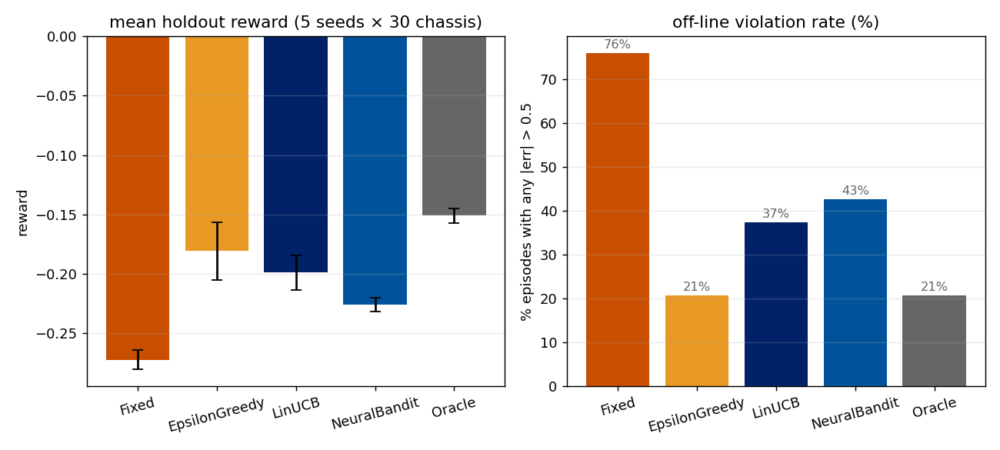
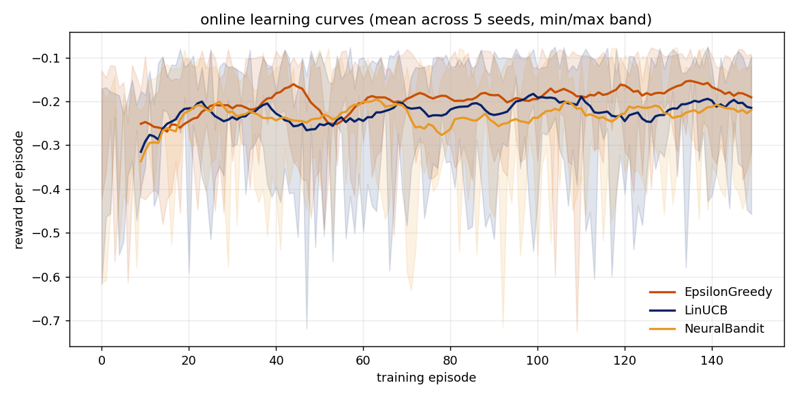
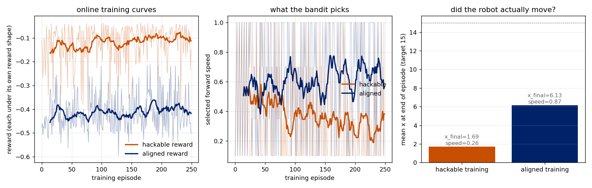

What this is
A robot follows a curvy line with a PID controller. When a student swaps
motors or tires, the PID gains that worked yesterday no longer fit.
Rather than re-tune by hand, a contextual bandit picks kp, kd
from a discrete menu based on a short feature vector describing the
chassis. The animation below uses traces pre-computed by
scripts/run_experiments.py.
Robot
Timeline: line error
Offline summary charts


Holdout summary (5 seeds × 30 chassis)
| policy | mean reward | violation rate | notes |
|---|
Alignment: a reward-hacking demo
Give the bandit a knob for forward speed and set reward to
-MAE only. It learns to pick the slowest arm. The robot
idles near the starting line with near-zero error and never tracks the
curve. Penalizing travel deficit fixes it.
hackable reward
aligned reward
step 0 / 0
Full training plots

| hackable reward | aligned reward |
|---|